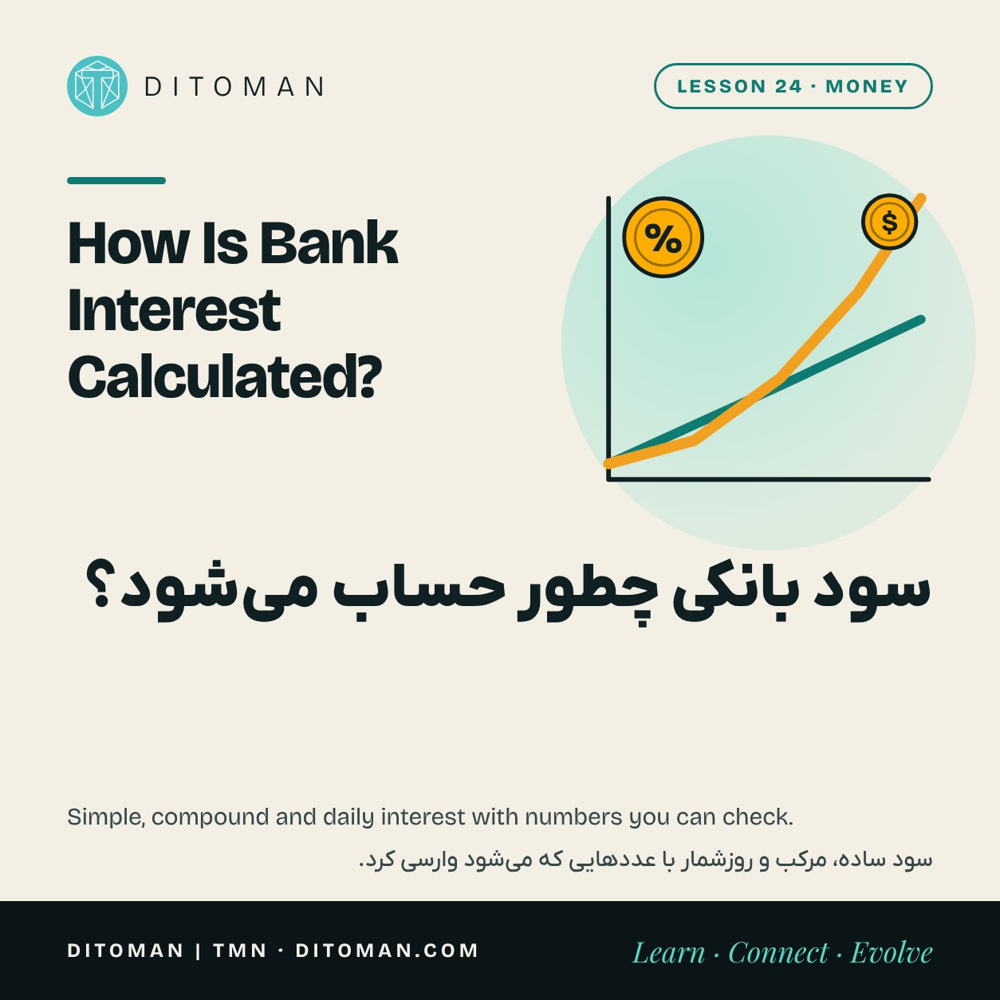

How Is Bank Interest Calculated?
كيف تُحسب الفائدة المصرفية؟
Simple, compound and daily interest all sound alike, yet over ten or twenty years they give very different results. This lesson shows the three with small numbers you can check by hand.
الفائدة البسيطة والمركبة واليومية تبدو متشابهة، لكنها تعطي بعد عشر أو عشرين سنة نتائج مختلفة جدًا. يبيّن هذا الدرس الثلاث بأرقام صغيرة يمكن حسابها باليد.
Lesson Content
محتوى الدرس
Read the lesson in English or Persian.
اقرأ الدرس بالفارسية أو الإنجليزية.
You put 1,000 units in an account that pays 5% a year. After one year you have 1,050. Everyone agrees on that. The disagreement starts in year two.
Does the 5% apply again to 1,000, or to 1,050? That small question is the whole difference between simple and compound interest.
01. Simple interest
With simple interest, the rate always applies to the original amount. Interest is 5% of 1,000, which is 50, every year.
After 10 years: 1,000 + 10 × 50 = 1,500. After 20 years: 2,000. The balance grows in a straight line.
02. Compound interest
The US Consumer Financial Protection Bureau puts it this way: compound interest is when you earn interest on the money you saved and on the interest you earned along the way.
Its own example is 1,000 dollars at 5% a year: 1,050 after year one and 1,102.50 after year two. The extra 2.50 is interest on interest.
| Year | Simple | Compound |
|---|---|---|
| 1 | 1,050 | 1,050 |
| 2 | 1,100 | 1,102.50 |
| 10 | 1,500 | 1,628.89 |
| 20 | 2,000 | 2,653.30 |
03. What time does to the gap
The difference starts tiny and then grows. At the same 5% a year:
10 years: simple 1,500, compound about 1,628.89.
20 years: simple 2,000, compound about 2,653.30.
Nothing about the rate changed. Only the base the rate applies to changed. The CFPB adds that more frequent compounding, a higher rate, or adding to the principal all make savings grow faster.
04. Daily interest
Some accounts and loans calculate interest by the day. With simple daily interest at 5% a year, one day earns 1,000 × 0.05 ÷ 365, and 30 days earn about 4.11.
Daily calculation matters because it shows how long money sat where. Money that arrives late in the month earns for fewer days, and a loan paid late costs more days.
05. Rate versus yield
A rate quoted as 5% a year, compounded monthly, does not give exactly 5% over the year. Because each month's interest earns interest, the effective yearly result is about 5.12%.
When you compare two offers, compare them on the same basis: the same period and the same compounding. A headline rate alone is not enough.
06. The same maths works against you
Compound interest works in both directions. On savings it is helpful; on a debt it is the reason a balance can grow even when you pay something. Lesson 19 showed how instalment costs build up, and this is the engine underneath.
07. Inflation also compounds
A bank rate only tells you the growth of the number. Lesson 12 explains that prices compound too. Whether your money really grows depends on the interest compared with the rise in prices, not on the interest alone.
What to take from this
Simple interest applies to the original amount; compound interest applies to the amount plus past interest.
At 5% on 1,000 over 20 years: 2,000 simple versus about 2,653 compound.
Compare offers on the same period and the same compounding.
Compounding helps savers and hurts borrowers.
Interest means little unless you compare it with price rises.
تضع ألف وحدة في حساب يعطي 5% سنويًا. بعد سنة يصير لديك 1,050. الكل يتفق على هذا. ويبدأ الاختلاف من السنة الثانية.
هل تُحسب الـ5% مجددًا على 1,000 أم على 1,050؟ هذا السؤال الصغير هو كل الفرق بين الفائدة البسيطة والمركبة.
01. الفائدة البسيطة
في الفائدة البسيطة يُطبَّق المعدل دائمًا على المبلغ الأولي. وفائدة كل سنة 5% من 1,000 أي 50.
بعد 10 سنوات: 1,000 + 10 × 50 = 1,500. وبعد 20 سنة: 2,000. يرتفع الرصيد في خط مستقيم.
02. الفائدة المركبة
يقول مكتب حماية المستهلك المالية الأمريكي (CFPB) إن الفائدة المركبة تعني أنك تكسب فائدة على المال الذي ادخرته وعلى الفائدة التي كسبتها في الطريق.
ومثاله 1,000 دولار بفائدة سنوية 5%: بعد السنة الأولى 1,050 وبعد الثانية 1,102.50. وهذه الـ2.50 الزائدة فائدة على الفائدة.
| السنة | بسيطة | مركبة |
|---|---|---|
| 1 | 1,050 | 1,050 |
| 2 | 1,100 | 1,102.50 |
| 10 | 1,500 | 1,628.89 |
| 20 | 2,000 | 2,653.30 |
03. ماذا يفعل الزمن بهذه الفجوة
تبدأ الفجوة صغيرة ثم تكبر. بالمعدل نفسه 5% في السنة:
10 سنوات: بسيطة 1,500، مركبة نحو 1,628.89.
20 سنة: بسيطة 2,000، مركبة نحو 2,653.30.
لم يتغير المعدل أبدًا. تغيّرت فقط القاعدة التي يُطبَّق عليها المعدل. ويضيف CFPB أن التركيب الأكثر تكرارًا أو المعدل الأعلى أو الإضافة إلى أصل المال، كلها تُسرّع نمو المدخرات.
04. الفائدة اليومية
تحسب بعض الحسابات والقروض الفائدة يوميًا. وبفائدة بسيطة يومية ومعدل سنوي 5%، يعطي كل يوم 1,000 × 0.05 ÷ 365 فائدة، وتبلغ 30 يومًا نحو 4.11.
والحساب اليومي مهم لأنه يُظهر كم يومًا بقي المال وأين. فالمال الذي يصل في آخر الشهر يكسب فائدة أيامًا أقل، والقرض الذي يُسدَّد متأخرًا يكلّف أيامًا أكثر.
05. المعدل مقابل العائد
المعدل الذي يُعلن بأنه «5% في السنة بتركيب شهري» لا يعطي بالضبط 5% على مدار السنة. فلأن فائدة كل شهر تجلب فائدة بدورها، تكون النتيجة السنوية الفعلية نحو 5.12%.
حين تقارن عرضين فقِسهما على أساس واحد: الفترة نفسها ونوع التركيب نفسه. المعدل الدعائي وحده لا يكفي.
06. الرياضيات نفسها تعمل ضدك أيضًا
تعمل الفائدة المركبة في الاتجاهين. هي مفيدة على المدخرات؛ وعلى الدَين هي سبب أن الرصيد قد يكبر حتى حين تدفع شيئًا. وقد بيّن الدرس 19 كيف تتراكم تكلفة الأقساط، وهذا هو المحرك تحتها.
07. التضخم يتركب أيضًا
معدل البنك لا يقول سوى نمو الرقم. ويشرح الدرس 12 أن الأسعار تتركب أيضًا. فكون مالك ينمو فعلًا أم لا يتوقف على مقارنة الفائدة بارتفاع الأسعار، لا على الفائدة وحدها.
ماذا نستنتج
الفائدة البسيطة تُطبَّق على المبلغ الأولي؛ والمركبة على المبلغ مع الفوائد السابقة.
مع 5% على 1,000 خلال 20 سنة: 2,000 بسيطة مقابل نحو 2,653 مركبة.
قارن العروض على فترة واحدة ونوع تركيب واحد.
التركيب يفيد المدّخر ويضر المدين.
الفائدة دون مقارنتها بارتفاع الأسعار قليلة المعنى.
Two lessons that connect
درسان مرتبطان
Lesson 12 shows why interest must be compared with price rises. Lesson 19 shows the cost side: what instalments really add up to.
يبيّن الدرس 12 لماذا يجب مقارنة الفائدة بارتفاع الأسعار. ويبيّن الدرس 19 جانب التكلفة: كم تبلغ الأقساط في النهاية.
Key Concepts
المفاهيم الأساسية
- Principal
- Interest rate
- Simple interest
- Compound interest
- Daily interest
- Effective yearly yield
- Compounding frequency
- أصل المال
- معدل الفائدة
- الفائدة البسيطة
- الفائدة المركبة
- الفائدة اليومية
- العائد السنوي الفعلي
- عدد مرات التركيب
Learning Objectives
أهداف التعلّم
- Calculate simple interest by hand.
- Explain compound interest as interest on interest.
- Compare 10- and 20-year results at the same rate.
- Work out a daily interest amount.
- Compare two offers on the same basis.
- احسب الفائدة البسيطة باليد.
- اشرح الفائدة المركبة بوصفها فائدة على الفائدة.
- قارن نتيجة 10 و20 سنة بمعدل واحد.
- احسب الفائدة اليومية.
- قارن عرضين على أساس واحد.
Quiz
اختبار قصير
Check what stayed with you. The answer is under each question.
انظر ماذا علق في ذهنك. الإجابة تحت كل سؤال.
Question 1
السؤال 1
1,000 at 5% simple interest for 10 years gives:
1,000 بفائدة بسيطة 5% خلال 10 سنوات تصير:
A. 1,500
أ. 1,500
B. 1,628.89
ب. 1,628.89
C. 1,050
ج. 1,050
Correct answer: A
الإجابة الصحيحة: أ
Question 2
السؤال 2
What makes interest compound?
ما الذي يجعل الفائدة مركبة؟
A. Interest is earned on earlier interest too
أ. تأتي فائدة على الفوائد السابقة أيضًا
B. The bank raises the rate each year
ب. البنك يرفع المعدل كل سنة
C. The account is closed early
ج. يُغلق الحساب مبكرًا
Correct answer: A
الإجابة الصحيحة: أ
Question 3
السؤال 3
1,000 at 5% compounded for 20 years is about:
كم تصير تقريبًا 1,000 بفائدة مركبة 5% خلال 20 سنة؟
A. 2,000
أ. 2,000
B. 2,653
ب. 2,653
C. 5,000
ج. 5,000
Correct answer: B
الإجابة الصحيحة: ب
Question 4
السؤال 4
Roughly how much simple interest does 1,000 at 5% a year earn in 30 days?
كم تعطي تقريبًا 1,000 بفائدة بسيطة 5% سنويًا في 30 يومًا؟
A. About 4.11
أ. نحو 4.11
B. About 50
ب. نحو 50
C. About 0.41
ج. نحو 0.41
Correct answer: A
الإجابة الصحيحة: أ
Question 5
السؤال 5
Why compare offers on the same compounding basis?
لماذا نقارن العروض على أساس تركيب واحد؟
A. A headline rate alone hides the yearly result
أ. المعدل الدعائي وحده يخفي النتيجة السنوية
B. Banks require it
ب. تُلزم البنوك بذلك
C. It makes the rate higher
ج. يرفع المعدل
Correct answer: A
الإجابة الصحيحة: أ
Sources
المصادر
The definition and the first two years come from the CFPB. The 10-year, 20-year, daily and effective-yield figures are our own arithmetic (1,000 × 1.05^10 and 1.05^20; 1,000 × 0.05 × 30 ÷ 365; monthly compounding of 5%), rounded. General guidance, not personal advice.
التعريف والسنتان الأوليان من CFPB. أما أرقام 10 سنوات و20 سنة واليومية والعائد الفعلي فهي حسابنا (1,000 × 1.05 أُسّ 10 و20؛ 1,000 × 0.05 × 30 ÷ 365؛ تركيب شهري لـ5%) ومقرَّبة. إرشاد عام لا استشارة شخصية.
نتابع معًاFollow along
New lessons are announced first on Ditoman's channels.
تُعرَض الدروس الجديدة أولًا على قنوات ديتومان.